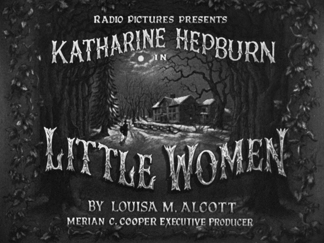
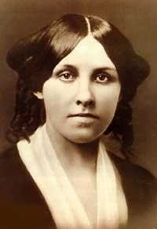
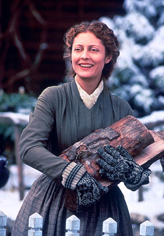

|
By now, there have been so many movie versions of Louisa May Alcott's Little Women,
set in Concord, Massachusetts, during and after the Civil War, that it's practically a
genre unto itself. The first, directed by George Cukor in 1933, with Katharine Hepburn as
Jo, has a deserved fond place in many film lovers' memories. There was a starched remake
in 1949, with an unconvincing MGM stock-company cast including June Allyson as Jo, Mary
Astor as Marmee, the mother, Janet Leigh as Meg, and Elizabeth Taylor (who certainly
looked gorgeous in ringlets) as Amy; the only member of the ensemble who restored some of
|

The 1933 version of Little Women
|
the material's faded glory was Margaret O'Brien, who infused little Beth's deathbed scene
with her trademark fervent emotionalism. (Jean Parker, in the Cukor version, had been a
rather wan Beth.) Gillian Armstrong's new Little Women, built on an exceptionally
fresh and intelligent screenplay by Robin Swicord, is as drastic a refurbishment of the
material as Cobb is a reinvention of the sports bio or Death and the Maiden
a deconstruction of a social problem play. That's less obvious in the case of Little
Women, however, because it's in the elegant, scalloped style of the great
studio-factory-era craftsmen--in particular William Wyler, who was responsible for one of
the most beautifully textured of Hollywood's literary adaptations, the 1939 Wuthering
Heights, in addition to such triumphant period pictures as Jezebel, The Letter,
and The Little Foxes.
The voice-over at the beginning tells us the movie's subject is a family that "creates
its own light," and the faces of the four caroling March sisters as they light candles and
trundle up to bed on Christmas Eve certainly seem to be lit from within. (The masterful
cinematographer is Geoffrey Simpson.) These four divide up the narrative in pretty much
equal portions. The eldest is Meg, played with wonderful delicacy by Trini Alvarado, the
gifted and self-effacing actress who was Diane Keaton's older daughter in Armstrong's
Mrs. Soffel and Bette Midler's daughter in Stella. Meg, coming from a family
that has lost its money, struggles with her own desire for conventionality; she tries on
the role of society coquette, borrowing the finery of an affectionate neighbor, and then
is embarrassed by her folly. The man she ends up with, John Brooke (Eric Stoltz,
delightful in a squarish red beard-and-mustache arrangement and making the most of his
little role), is far more conventional than she; she settles into a happy medium. Jo (the
charming, blessedly straightforward young actress Winona Ryder) turns down the ardent suit
of her closest companion, Teddy "Laurie" Laurence (Christian Bale), and moves to New York
to pursue a career as a writer for the ladies' magazines. Her struggle, which is guided by
a philosophy professor she falls in love with (Gabriel Byrne, surprisingly effective), is
to find her own voice. Homey Beth (Claire Danes, star of the short-lived television series
My So-Called Life) catches scarlet fever from a poor family the Marches have more
or less adopted, and though she survives--barely--her bout with the disease, it weakens
her heart and marks her for an early death. The pet of the family, Amy (Kirsten Dunst),
|

Louisa May Alcott
|
grows into a beauty (Samantha Mathis) who travels to Europe to study art in the company of
their Aunt March (that crusty, venerable old Yankee, Mary Wickes). Amy returns home with
Laurie on her arm.
Even when Amy's and Jo's sojourns break up the family, it remains the focus of the
movie; we feel a certain uneasiness until the sisters can return home. (Perhaps that's why
this section of the picture feels a little flat.) A motif of windows and doorways runs
through the film, grounding us in the idea of home-a theme the story, with its repeated
homecomings, implies and Robin Swicord's script makes explicit (and a theme dear to
Armstrong's heart, as you can see in her 1992 picture, The Last Days of Chez Nous).
When Laurie, who lives across the street, enters the narrative, Armstrong shows us the
March household, with the family within, from his envious perspective; lonely in his own
dull house, where he lives with his grandfather (John Neville), he longs to penetrate
theirs. And he does, infiltrating the sisters' acting club, which has up till now brooked
no outsiders among its membership. Christian Bale, who demonstrates a remarkable
complexity of emotion in this role, makes it very clear that Laurie's objective is to win
a permanent place in this family he adores. When Jo refuses him, he feels closed out, and
he behaves like an exile, removing himself to the continent and a life of Bohemianism and
profligacy--until his rediscovery of the now grownup Amy gives him a reason to earn his
way back to the Marches. We see John and Meg kiss under the arch of an open doorway,
framed by the countryside, and our attention is drawn to the fact that he has no home to
offer the woman he loves.
In Swicord's adaptation, the March home is no ordinary one. Louisa May Alcott set her
story in a distinctly Protestant world, where Marmee's good works are imitated by her
dutiful daughters, who play a game inspired by John Bunyan's The Pilgrim's
Progress. Swicord transfers the qualities of Alcott's own family to the Marches,
giving them a quite different worldview. Spiritually and intellectually, they're
Transcendentalists; politically, they're progressive liberals--pro-suffrage, anti-child
labor, abolitionists, and teetotalers. When Amy is beaten by her schoolmaster, Marmee
(Susan Sarandon), in a flare of temper, removes her from his jurisdiction and puts Jo in
charge of her home schooling. She preaches against the constraint of corsets (shocking
John Brooke), and when Beth's illness calls her home from Washington, where she has been
visiting her husband, injured in the war, she succeeds where the well-meaning doctor has
failed: her own homeopathic medicine draws the fever out. The March family may seem
eccentric to some of their Concord neighbors; in our eyes, their advanced views
contemporize them.
Swicord's ingenious reworking of the material enables Armstrong--who is, after all, the
woman who made My Brilliant Career, Mrs. Soffel and High Tide--to offer an
essentially feminist perspective on the story of the March sisters. Laurie's fascination
with the March household, his longing to be received there as an insider, has much to do
with its strange feminine warmth, so different from anything he sees in his grandfather's
mansion. His tutor, Brooke, every inch the Victorian, counsels him, "Over the mysteries of
female life lies a veil better left undisturbed," But Laurie isn't satisfied with the
division between the worlds of little men and Little Women. Nor is Jo, who, living
in a Manhattan boarding house, surrounded by young men who feel their cultural right to
express their opinions openly, is at first self-conscious and then eager to join the

Director Gilliam Armstrong on the set of Little Women
|
debate. (As Marmee's child, she has much to offer.) She sells her beginner's stories under
the pseudonym "Joseph March"; the movie crowns her triumph when she finally writes a novel
and signs it "Josephine." This novel, of course, is the story of the March family: in this
version Jo is unmistakably Louisa May Alcott.
The movie has a few small defects. Susan Sarandon is vivid in a way no previous Marmee
has been, but even when you substitute this woman's liberalism for the old Marmee's
Victorian Christianity, she's still a moralist, making speeches. Mr. March is as shadowy a
figure as ever; the story is welcoming to each of the three suitors, but the "little
women" set-up doesn't really allow for a strong paternal figure, especially since his
absence during the war is one of the defining factors for the familial structure. (In the
book and in Cukor's version, it's Mr. March who supplies the fond moniker "my Little
Women" for his daughters; here it's Marmee, which makes more sense.) And though Samantha
Mathis is perfectly adequate as the adult Amy, she can't match Kirsten Dunst, whose
bright-eyed insistence on wearing a clothespin on her nose (which she thinks will improve
it) and whose abashed, muttered apology to Jo after a particularly egregious offense and
whose touchingly childlike greeting of her long-gone father (she slides across the room
and grabs hold of his trouser leg) we keep replaying in our heads. It's not Mathis's
fault, but the transition from one Amy to another is jarring, like the shift from Jean
Simmons to Valerie Hobson in David Lean's film of Great Expectations.
You can't imagine a more magnificent framing of this story, though--or a more emotional
one. Armstrong gets beautiful work from her actors. If you're familiar with the 1933
version, you may miss the way Katharine Hepburn flooded the role of Jo with an almost
unbearable concentration of feeling, and her line readings may still ring in your ears
(like the way she tells Marmee, upon rejecting Laurie's proposal, "I feel like I just
stabbed my best friend"). But Hepburn was the unmistakable core of that film. Armstrong
doesn't linger on Winona Ryder in the same way; her movie belongs to all four of the
little March women. With the single exception of Vanya on 42nd Street, this is the
ensemble of the year, though if I had to pick a favorite among the cast, it would be the
miraculously expressive Claire Danes as Beth. Jan Roelfs, the production designer, and
Colleen Atwood, who did the costumes, work with Armstrong and Geoffrey Simpson to give the
loving period reconstructions a lived-in feeling; as in Mrs. Soffel, the actors
inhabit the period setting completely. (The production team is largely responsible for the
movie's deluxe, Christmas-gift appeal, though the composer, Thomas Newman, deserves his
share of the credit too.) There are glancing images that accompany you out of the theater,
|

Susan Sarandon in Little Women
|
like a shot of a scarecrow with a pumpkin head dragged along a country road, which
suggests seasonal change in the sensual, nostalgic way Vincente Minnelli does in Meet
Me in St. Louis. And when Armstrong signals Beth's death with a silent scene in which
the housekeeper, Hannah (played with great feeling by the veteran Canadian actress
Florence Patterson), crushes wild roses and scatters them over her bed and her dolls, the
director seems to have moved beyond even Minnelli and William Wyler. This is a moment
Griffith might have dreamed up.
Maybe you can best grasp what's most radical about Little Women if you see
something like the other movie Susan Sarandon appeared in last Christmas, Safe
Passage, where she played the mother of seven sons, one of whom, the family learns,
may have been lost in the bombing of the Marine compound in the Gulf. Sarandon plays the
character as neurotically possessive, a variant on the startling performance she gave two
years earlier in Lorenzo's Oil, but the movie is so blindly, maniacally dedicated to its
fraudulent family values agenda that it misapprehends her completely and validates every
loony impulse that strikes her. By the end of the film, the Marine has called home to say
he's unhurt, the scientist grad-student son has cured his father's mysterious periodic
blindness, the repressed son has given way to his emotions (and been certified a
passionate lover), and the youngest son, who seems suicidally disturbed, has been rescued
from his fears of being unloved by his mother, who wrestles a killer dog in his defense
(and nearly beats it to death). Safe Passage is Hollywood's idea of a domestic
drama: in its presentation of the indomitability of family spirit, it sweeps everything
dark or unsavory into the garbage and then throws the garbage out of the frame. On the
same theme, Little Women considers the emotional intensity of a non-neurotic--but
absolutely unconventional--family, exploring the depths of their responses to love,
marriage, war, death, childbirth, career choices. Armstrong pays tribute to both the
authenticity of those responses and the strength of their commitment to each other.
Working, paradoxically, in the tradition of classic Hollywood moviemaking, she moves in
the opposite direction of Hollywood's usual fakery and platitudes about family life and
ends up with one of the most impassioned and heartfelt family sagas ever made in this
country.
Source: Steve Vineberg in The Threepenny Review 62
(Summer 1995), 26-27.
|